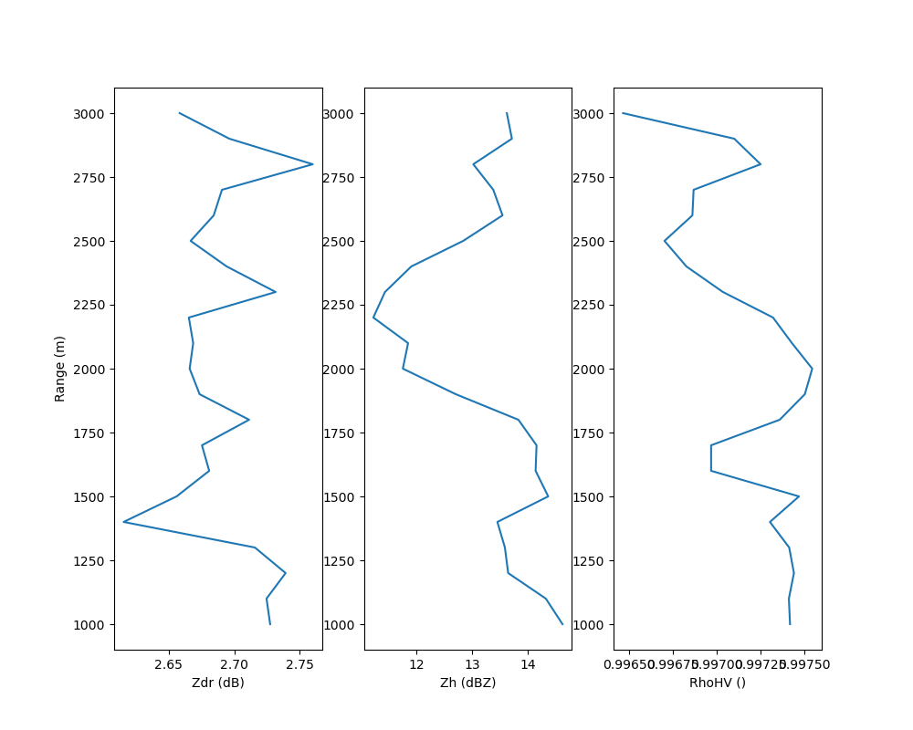

Note
Go to the end to download the full example code
ZDR Bias Calculation
This example shows how to calculate the zdr bias from VPT/Birdbath scans
/home/runner/work/RadTraQ/RadTraQ/examples/plot_zdr_check.py:15: DeprecationWarning: act.io.armfiles.read_netcdf will be replaced in version 2.0.0 by act.io.arm.read_arm_netcdf()
ds = read_netcdf(radtraq.tests.sample_files.EXAMPLE_XSAPR)
Zdr Bias: 2.69
import matplotlib.pyplot as plt
from act.io.armfiles import read_netcdf
import radtraq
# Read in example data
ds = read_netcdf(radtraq.tests.sample_files.EXAMPLE_XSAPR)
thresh = {'cross_correlation_ratio_hv': [0.995, 1], 'reflectivity': [10, 30], 'range': [1000, 3000]}
# Call RadTraQ function
results = radtraq.proc.calc_zdr_offset(ds, zdr_var='differential_reflectivity', thresh=thresh)
print('Zdr Bias: ' + '%.2f' % results['bias'])
fig, ax = plt.subplots(1, 3, figsize=(10, 8))
ax[0].plot(results['profile_zdr'], results['range'])
ax[0].set_ylabel('Range (m)')
ax[0].set_xlabel('Zdr (dB)')
ax[1].plot(results['profile_reflectivity'], results['range'])
ax[1].set_xlabel('Zh (dBZ)')
ax[2].plot(results['profile_cross_correlation_ratio_hv'], results['range'])
ax[2].set_xlabel('RhoHV ()')
plt.show()
Total running time of the script: (0 minutes 0.369 seconds)